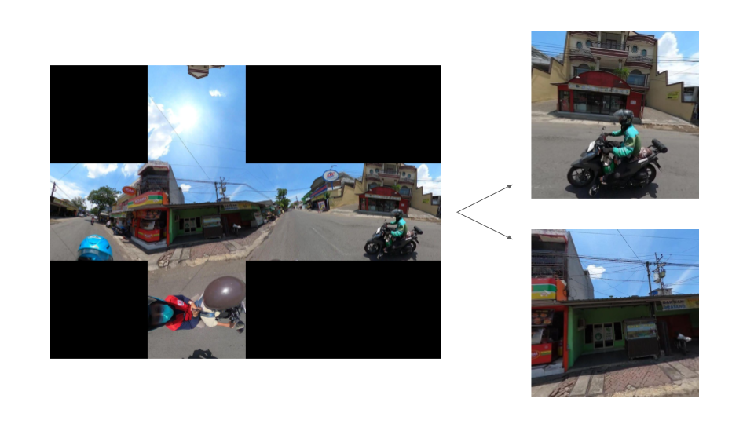
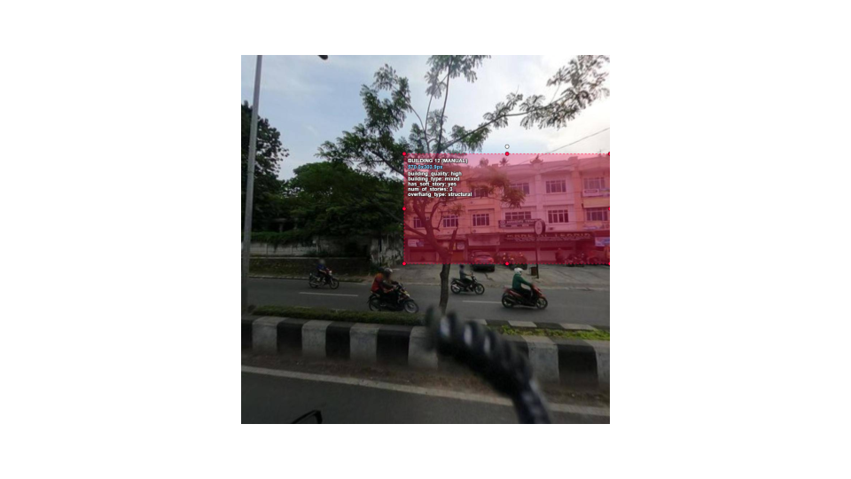
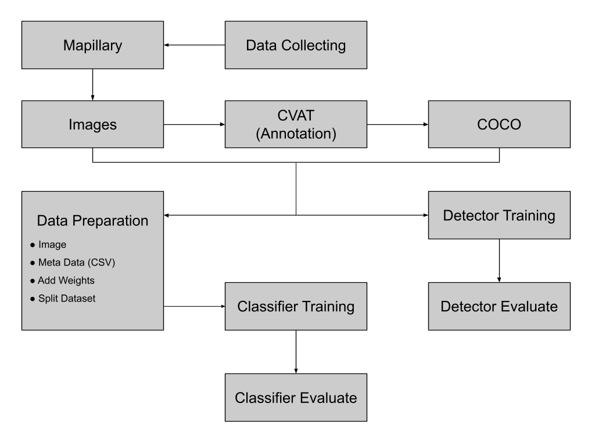
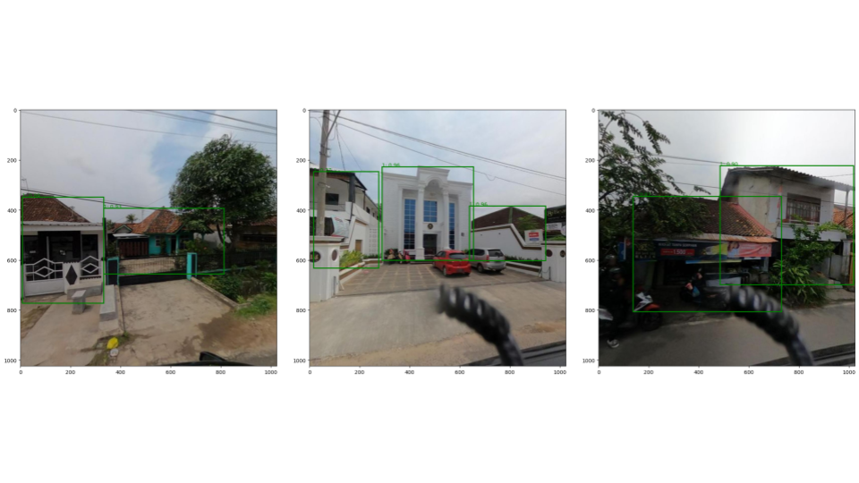

Street Level Imagery for Humanitarian Analysis
In Progress
Machine Learning, Computer Vision, Image
This project is currently in progress under the American Red Cross International Services.
Project Overview
The objective is to develop automated tools that extract insights from street-level imagery. The initial focus will be the improvement of planning information for climate-related disaster risk reduction in urban areas. This project will establish a foundation for future plans to transition into post-disaster impact assessments.
Background
Satellite imagery has long been a vital source of geospatial data, but its high cost and limited ground-level detail pose challenges. In contrast, Street-Level Imagery (SLI) provides an accessible and detailed view of the built environment, enabled by affordable GPS-equipped action cameras that efficiently capture high-quality images. With rapid advances in computing and machine learning, it is now possible to process large amounts of visual data and extract actionable insights. The Indonesian Red Cross Society (PMI) seeks to adapt automated tools for mapping estimated urban heat risk, using this as a case study for humanitarian applications of SLI. The project aims to improve planning for climate-related disaster risk reduction and lay the groundwork for post-disaster impact assessment through reliable image analysis.
Data Collection and Preprocessing
Street-level imagery was collected by PMI (Indonesian Red Cross Society), using 360° GoPro cameras. The collected images were uploaded to Mapillary, an open platform for geospatial imagery.
Only side-view frames (excluding top, bottom, front, and rear views) that contained buildings from 360° images were extracted for the dataset. These processed images served as the primary dataset for annotation and model training.

Annotation and Labeling
CVAT (Computer Vision Annotation Tool) was used for manual annotation, with annotations exported in COCO format for bounding box and attribute labeling. Our team discussed and defined an initial set of disaster-related building attributes, which are as follows.
Class: Building
Attributes
- Building Quality: High, Medium, Informal
- Building Type: Residential, Commercial, Mixed, Industrial
- Presence of Soft Story: No, Yes
- Number of Stories: 0-100
- Overhang Type: None, Structural, Non-Structural

Model Development
Model Development Overview

The project’s modeling process was designed as a two-stage pipeline consisting of object detection and attribute classification.
Object Detection
Several architectures such as Faster R-CNN, RetinaNet, YOLOv8, and YOLOv11 were tested. Among these, Faster R-CNN using the Detectron2 franwork was chosen for its balance between detection accuracy and efficiency. The pretrained Faster R-CNN model from Detectron2’s Model Zoo was fine-tuned and evaluated using mAP (mean Average Precision) metrics.
The fine-tuned model achieved an mAP of 0.76, demonstrating strong detection performance.

Classification
A framework based on ConvNeXt V2 Tiny architecture was implemented for classification model, following the approach used in Development Seed’s Housing Passport project. This model is designed to classify disaster-related building attributes mentioned above. Although the overall pipeline and training codebase have been established, full-scale training has not yet been conducted due to the limited number of labeled samples per attribute. Once sufficient annotated data become available, it will enable efficient retraining and performance evaluation across multiple attribute categories.
Current Work and Future plans
At present, the team’s focus has shifted to developing a model validation application using crowdsourcing, while dataset preparation remains on hold. Once additional building images and annotation data become available, the project will resume with model retraining. The next phase will involve expanding the dataset and annotations and improving the detection and classification models to achieve better accuracy.
The long-term plan is to deploy the models as open-source tools that can support in disaster preparedness and response efforts.
Technical Stack
| Category | Tools / Frameworks | Description |
|---|---|---|
| Programming Languages | Python | Core language for data processing and model development |
| Data Annotation | CVAT | Used for labeling building attributes and bounding boxes |
| Object Detection | Detectron2 | Framework for developing and evaluating object detection models |
| Classification | PyTorch | Used to build and train classification models for building attributes |
| Data Management | Mapillary | Data source for street-level imagery |
| Collaboration / Version Control | GitHub, Hugging Face, Google Drive, Slack | For code, dataset, and model sharing, and team coordination |
| Reference | Development Seed’s Housing Passport | Served as a conceptual and structural reference for the project |
Reflection
This project underscored the critical importance of building high-quality datasets. To develop a model that can be broadly applied across Indonesia, it is essential to include diverse building imagery that reflects different regions and structural types. Although image collection has been completed, the preparation of training-ready datasets has not yet been finalized. The process revealed that model performance depends not only on algorithmic sophistication but also on the quality, balance, and representativeness of the data itself. Establishing a robust data foundation will be a key step toward developing a model that is both accurate and scalable for real-world humanitarian applications.
Summary
Developed a full pipeline to process 360° street-level imagery, detect buildings, and classify structural attributes related to disaster vulnerability. Building an automated tool for urban risk assessment combining deep learning, crowdsourcing, and geospatial analysis.
References
- American Red Cross International Services
- Development Seed
- PMI (Indonesian Red Cross Society)